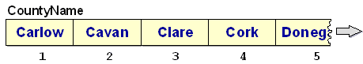

When the program above displays the accumulated tax totals, instead of displaying a county
name, it displays a county code. The problem with this is that, if the user is going to make
any sense of the report, he has to remember which codes represent which counties. In a real
environment, you couldn't present the user with the information in this form. The county
name would have to be displayed.
So how would we go about displaying the county name?
One solution might be to use an EVALUATE to examine the
CountyCode and then display the appropriate message. For example -
EVALUATE CountyCode
WHEN 1 DISPLAY "Carlow tax total is " CountyTax(1)
WHEN 2 DISPLAY "Cavan tax total is " CountyTax(2)
.... 24 more WHEN branches
END-EVALUATE.
But this solution is not very satisfactory. It is simply reverting to the 26
WHEN branch solution presented earlier. But this time, we
know that there must be a more elegant solution. And there is!
If we declare a CountyName table and fill its elements with the names of the counties, we can
replace the EVALUATE solution above, with one simple
statement -
DISPLAY CountyName(Idx) " tax total is " CountyTax(Idx).
We can incorporate this statement into the County Tax Report program as follows -
PROCEDURE DIVISION.
Begin.
OPEN INPUT TaxFile
READ TaxFile
AT END SET EndOfTaxFile TO TRUE
END-READ
PERFORM UNTIL EndOfTaxFile
ADD TaxPaid TO CountyTax(CountyCode)
READ TaxFile
AT END SET EndOfTaxFile TO TRUE
END-READ
END-PERFORM
PERFORM VARYING Idx FROM 1 BY 1
UNTIL Idx GREATER THAN 26
DISPLAY CountyName(Idx) " tax total is " CountyTax(Idx)
END-PERFORM
CLOSE TaxFile
STOP RUN.
In the next tutorial we will examine how we can use the
REDEFINES clause to set up a predefined table of values.
For the moment, we won't concern ourselves with the exact mechanics of setting up the
CountyName table but we can represent it diagrammatically as follows;

The elements of the table may be referenced in the usual way, so the statement
DISPLAY CountyName(3) will display the value "Cork" and
DISPLAY CountyName(5) will display "Dublin".